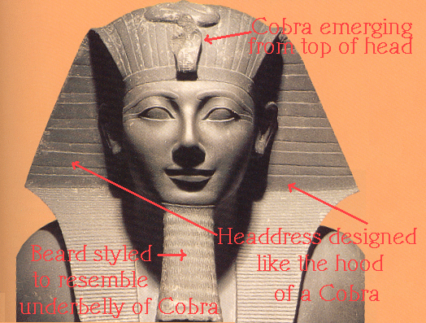
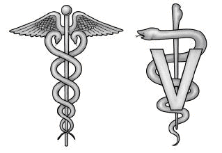
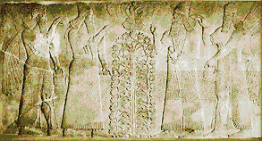
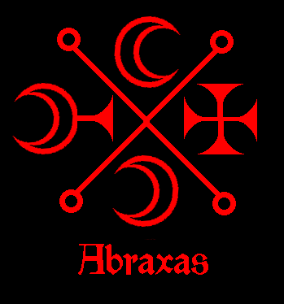
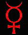

"IN THE SECRET OF MY KNOWLEDGE THERE IS NO GOD BUT ME"
-SATAN
From "Peace Be Unto Him"
Due to centuries of misinformation, lies, and the systematic removal of knowledge, few people these days understand or even know what “Satanism” really is all about.
Christianity has been at liberty to dictate without any opposition, what they CLAIM Satanism to be. In order to accomplish this, the truth had to be destroyed. The Catholic Church (the original Christian Church, from which all Christian sects have evolved), heinously tortured to death and mass-murdered millions of innocent men, women and children in what was known as "The Inquisition." Some children who were burnt to death in what were known as "witch houses" were as young as two years of age.¹
Christians forever rant and rave concerning the "one world order" where all identities, cultures, personal privacies, and liberties will be lost and humanity, after being systematically bar-coded, will be lumped into a one-world slave state. What they fail to see is how their own so-called "religion" and bible have always been and are the roots of and blueprint for this regime. Everything in the Judeo/Christian Bible has been stolen and corrupted from religions predating Judaism, Christianity, and Islam from hundreds to thousands of years. Through Judaism and its tool of Christianity, all of the original spiritual teachings from around the world, (which are CONCEPTS) have been stolen from, lumped together into the "one," and corrupted into Jewish archetypes and characters and fictitious places. This has given the Jewish people as a whole a false history, political power and "spiritual" authority to which they are not entitled.
The bible is a very powerful subliminal tool to control the masses. One can see this is a man-made work as there are endless contradictions. The bible has been systematically drummed into the minds of the populace from a very early age. A lie must always be enforced as opposed to the truth which can stand on its own. Because spiritual knowledge and occult power have been removed and kept in the hands of a "chosen" few, the unknowing populace has been helpless against it. The agenda here is to create a one-world slave state with the "chosen" few ruling at the top. The perpetrators of course blame Satan to create a necessary distraction, while they use occult power to accomplish their ends. They have a history of stealing from and blaming their enemies for everything they really are and do, while always holding themselves in the highest esteem and innocence.
The original religions now known as "Satanism" (by the way, "Satan" means "enemy" in Hebrew), were all based upon what is known as the "Magnum Opus" or Great Work. The one known as "Satan" is our True Creator God. He was prevented by the other Gods from finishing his work on humanity, that of the godhead. The godhead is physical and spiritual perfection. Now, if you continue to read on, I will prove this.
|  | The serpent is seen everywhere in ancient relics and structures. The serpent was held sacred in all areas of the ancient world. Satan is the God Ea, aka ENKI, one of the first of the Nephilim to arrive on this planet and establish the first civilization. In Sumerian mythology, Enki's symbol was always the serpent. |
|  | The serpent represents the DNA, the life force and the kundalini and has survived as the emblem of the American Medical Association and Veterinary medicine, where it is symbolic of life and healing. Only with the coming of Judeo/Christianity, has this sacred symbol been desecrated and blasphemed. |
Nearly all of us are familiar with the term "fallen." This word has been used copiously by Christian clergy to refer to Satan and his Demons. In truth, "fallen" pertains to the kundalini serpent (which has always been associated with our Creator God Satan), which has fallen in humanity as a whole and now lies dormant at the base of the spine. Because of this, humanity as a whole is on a very low level of spiritual understanding. Thoughtless abuses of children and animals, senseless wars, brutality and endless corruption are the results of the fallen serpent.
|  | The "Tree of Life" which was stolen from the ancient Pagan religions and found its way into the biblical book of Genesis, was seen in many parts of the ancient world in friezes upon walls of ancient temples and in some tombs. The "Tree of Life" is actually a map of the human soul. The trunk is the spine and the branches are the pathways for the chi (bioelectricity). |
The serpent is what empowers the soul, bringing the all-knowing state of super consciousness known as "samadhi." The "Sun-God" in truth is the ball of condensed chi (bioelectricity), which is visualized and circulated through each of the chakras (Gods) to empower and cleanse the soul, using specific meditations. This is stage one of the Magnum Opus.
The stolen accounts in the Judeo-Christian Bible of humans living for hundreds of years or more were taken from the objective of the Magnum Opus. This is where all so-called "witchcraft" leads to- alchemy of the soul. This is the highest and most profound working of the human mind, that of accomplishing the godhead of which is our birthright given to us from our Creator Satan.
|
|
|
The halo seen in many paintings is the witchpower of the risen kundalini. The Christians stole this concept from the original religions, both east and west. The Buddha is seen with a halo as are many of the Hindu Gods for one example.
The era in which the original religions reigned was known as the "Golden Age." Some 10,000 years ago, the Gods left us. This article is not to go into the details as to how or why. This will be covered in a separate article. The Gods are an extraterrestrial race of beings. As a matter of fact, there have been several different alien races that have lived here on planet Earth, and have taken an interest in human beings, either as friends, enemies, or neutrals.
The main Gods who interacted with humanity and are our creators (through genetic engineering) are the race of Gods known as the Nordics. They live throughout the galaxy in several different solar systems. They are highly advanced in knowledge, intelligence, and in spirit. Some are helpful to humans as are Satan and the Elder Gods who have been labeled as “Demons.” Some are neutral and others are and have been working for our destruction. The background concerning the creation can be found in more detail in separate articles on this website.
There has been a war over humanity in which Satan and his Demons wish to give us the knowledge to elevate ourselves to spiritual and physical perfection, while the enemy wishes to keep us spiritually ignorant in order to use our life force (souls) as a free energy supply.
In many writings of a spiritual or occult nature, the term "God" or "Gods" was also used to describe the seven chakras. Due to centuries of persecution of those who had spiritual knowledge, doctrines contained many allegories and code words. The number "seven" is repeated endlessly in the Judeo/Christian bible. This is a corruption of the seven chakras of the soul.
|  | The original cross was equal armed, as seen in many of the Demon Sigils, with the points (representative of the chakras) flaring out. Other well-known examples are the Nazi Iron Cross and the Bikers' cross. In truth, this is the shape of the human soul, and represents the four elements (fire, earth, air and water) of which the human soul is comprised. |
The Tarot, which originated in Egypt and is based upon the constellations (Egypt was the center of Spiritual Alchemy) has evolved into a deck of cards, of which modern playing cards originated after the trump was discarded. The Tarot has a hidden message and instructions for performing the Magnum Opus. From the Tarot, the Jewish invented "Torah" was stolen, with the original teachings being thoroughly corrupted. The Jewish "Torah" is also known as "The Five Books of Moses" (another fictitious Jewish character based upon Sargon and Thutmose) or the "Pentateuch." The five books were rip-offs from the five suits of the Tarot: Wands/Rods (the element of fire), Pentacles/Coins (the element of earth), Cups (the element of water) and Swords (the element of air), with the trump being the aether or quintessence. All five elements form the essence of the human soul (the fifth element of quintessence holds the four together) and are employed in the working of the Magnum Opus.
Each of the Jewish characters and archetypes in the Bible are imposters stolen from Pagan Gods. "Jesus" is NOT a real being, but a CONCEPT. For those deluded Christians who believe they have experienced "Jesus" in reality, they are communing with nefarious extraterrestrial beings. Aleister Crowley while in a trance state, drew a picture of what is known to be "Jehova" (a corruption of "YHVH" another rip-off of the four quarters and elements, making the 'name' pronounceable) and drew a grey. At that time, knowledge of ET's was not widespread and photos of them were non-existent. These same beings are said to have made a deal with the Vatican: souls in exchange for wealth and power in the hands of a few. To accomplish this end, all spiritual knowledge had to be removed. No scam can succeed if the victim has knowledge. In order to be effectively victimized, one must be unknowing. Satan is the bringer of knowledge and enlightenment. He has nothing to hide.
Getting back to the nazarene, the crucifix of which I might add was not seen in any place of worship until after the ninth century and is another rip-off of the four quarters, the Jewish archetype "Jesus/Yeshua" is a CONCEPT. The 33 years he was said to have lived represent the 33 vertebrae of the human spine of which the kundalini ascends. The crucifixion symbolizes the Magnum Opus: the torture, the death, and the resurrection. Origins that symbolize this work include the Egyptian phoenix (born again from the ashes), the Egyptian God Set, who was crucified on a furka, the tale of Isis and Osiris, where Osiris was mutilated into some nine parts and was resurrected by Isis.
The Jewish "Virgin Mary" is a corrupted imposter of Astaroth. Michael the archangel is the same and was stolen from Marduk. Archangel "Gabriel" was stolen from the Egyptian God Thoth, Raphael was stolen from Azazel and Uriel from Beelzebub. Again, another rip-off of the four quarters.
For further information, links are provided at the bottom of this article.
Human sexuality has always been severely regulated and frowned upon by the Christian Church. This is because sexuality and orgasm as the life force are essential to spiritual advancement and the raising of the kundalini serpent. Because the church could not supervise sexual activity, they enforced a doctrine of extreme terror. The populace, stripped of all knowledge and spiritual power (ignorance= fear) fell victim to lies. “Hell” emerged on the scene. The word “Hell” was stolen from the Norse word “Hel” representing the Norse underworld. In truth, "Heaven" and "Hell" are code-words for the base and crown chakras. Every attempt was made by the church to replace any spiritual associations with these numbers and any significant numbers that were related to the human soul such as 144,000, which is the number of nadis within the human body to channel the life force. The number two became synonymous with Satan. The second chakra is sexual in nature and controls human sexuality, so of course any association with two was evil. Blockages in the second chakra keep an individual completely enslaved spiritually as the life force remains completely dormant in the first chakra.
With fear, human beliefs and thoughts can be controlled. Humanity was led to believe this omnipresent and “all-powerful” “God” could know their every little thought and action. Through fear, people began to monitor their own thoughts and actions. The seven sacraments (another rip-off of the seven chakras) of the Catholic Church enforced strict control over every stage of an individual’s life. The most control was exercised through the so-called "sacrament" of “confession.” Through confession, the church had even more control, that of knowing the deepest secrets of the frightened population. This enabled the ruling clergy to have power over kings, queens and other secular monarchy.
Satan tells us in the Black Book (The Al Jilwah), that many writings and texts have been altered. Upon researching the origins of various myths and religions, I find many authors are at a disagreement, both religious and secular. This is due to the Christian Church's systematic destruction and removal of ancient knowledge. To make matters worse, many of the remaining original documents that escaped destruction have been altered.
The Gods left us the truth, inscribed in stone. The pyramids (the pyramids are in the shape of the chakras) have stood against time. It is apparent these ancient monoliths were constructed for future humanity, left to us by the Gods who knew of our fate. These monuments speak for themselves. They were built to reflect the movements of the stars and act as a calendar for beginning the all-important work of the Magnum Opus. The Magnum Opus is normally commenced in the spring, when the Sun enters the sign of Aries, which is known as the "Vernal Equinox." The precise time for beginning this work is at 3 am, which is the hour of Satan. This is the true hour. The fictitious nazarene was said to have perished at 3 pm. 3 pm is actually 15:00, not three and is thus false.
The "Horned God" originates from Sumeria. The Sumerian Gods wore headgear with horns. This predates Judeo/Christianity by thousands of years. Pagan religions were known for their worship of the Horned God. Only with the coming of Christianity, were they repeatedly stamped out, but continued to resurface and survive. Again, the Horned God was maligned and labeled as "evil".
|  | The Horned God is a symbol of the chi, the bioelectrical life-force. This is represented by Mercury, as it is fleeting, until fixed through the Magnum Opus. The glyph for the planet Mercury has the horns. |
The carvings and the hieroglyphics on the Temple walls and the pyramids still remain with us today, as evidence of the truth for those who have enough spiritual knowledge to interpret them. This is why the Gods imprinted these into stone. Satanism is based upon the Magnum Opus. All of the Satanic symbols, the emphasis on witchcraft and knowledge; all of these represent the achievement of the godhead. The Magnum Opus is what Satanism is all about: humanity reaching physical and spiritual perfection.
Click on the links below for more information on the origins of Satanism:
The Earliest Origins of Satanism are in the Far East
Exposing Spiritual Corruption: Spiritual Alchemy & the Bible
References:
¹ Cassel Dictionary of Witchcraft by David Pickering, article on "Germany", page 108
The Lost Book of Enki; Memiores of an Extra-Terrestrial God by Zecharia Sitchin
Satan Wants You by Arthur Lyons, pp 24-26
The Biography of Satan by Kersey Graves, pp 146- 147
The People of the Sea- The Search for the Philistines by Trude and Moshe Dothan, pp 185- 186
Part 2: The Earliest Origins of Satanism are in the Far East
Part 3: The Earliest Origins of Satanism are in the Far East II